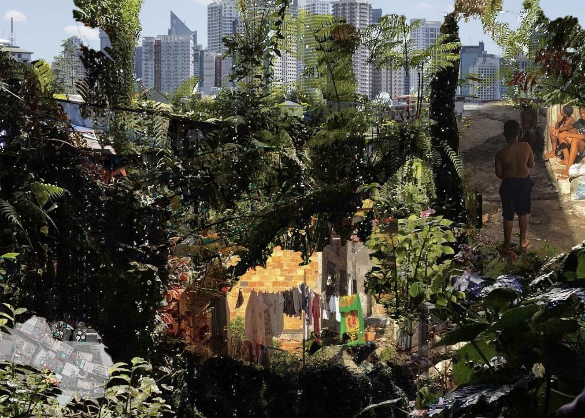

The presence of informal settlements could bring about two different approaches: one advocating for state intervention and need for allocation of land titles, and the other one arguing that physical infrastructure improvements and grants of home ownership are problematic and reduce informal settlements to objects of state regulation. Several attempts have been made to integrate these informal settlements with the surrounding urban fabric through improvements in services and infrastructure. This study analyzes the Favela Bairro programme in Rio de Janeiro. This project, introduced in 1995, represented a paradigm shift in the policies and discourses about the favelas and was a first step in the urban integration of informal settlements with the urban grid, acting as a reference for countries where similar dynamics took place.

Considering Rio de Janeiro, informal settlements here are growing at an incredible speed. According to the 2000 and 2010 Censuses in Rio, informal neighbourhoods grew 28.0%.
Residents don't have a legal claim to their homes in these neighbourhoods, defined as "built on land that is unsuitable for residence, either because it lacks basic urban infrastructure or proper legal requirements, or both". This study analyzes the potential shortcomings of only taking into consideration physical infrastructure's improvement policies and allocation of land titles.
Contact for full text